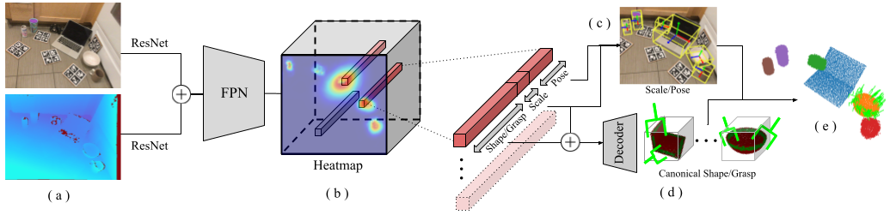
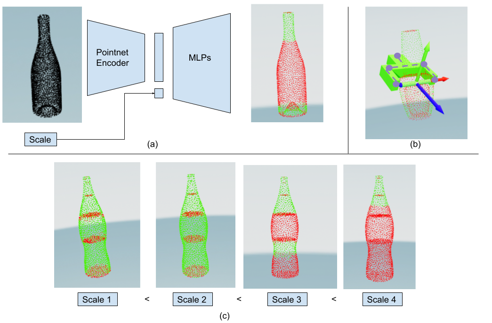
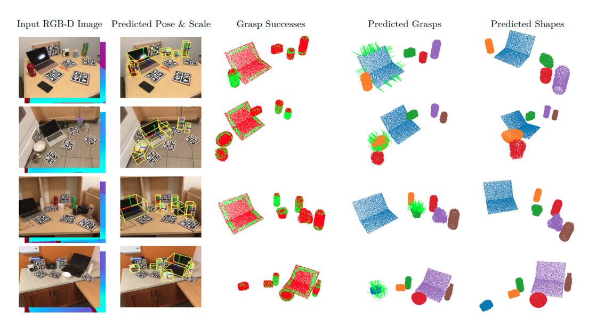

In this paper, we present a real-time method for simultaneous object-level scene understanding and grasp prediction. Specifically, given a single RGBD image of a scene, our method localizes all the objects in the scene and for each object, it generates the following: full 3D shape, scale, pose with respect to the camera frame, and a dense set of feasible grasps.
The main advantage of our method is its computation speed as it avoids sequential perception and grasp planning.
With detailed quantitative analysis of reconstruction quality and grasp accuracy, we show that our method delivers competitive performance compared to the state-of-the-art methods while providing fast inference at 30 frames per second speed.
Video
SceneGrasp Architecture

SceneGrasp-Net during inference time takes in an RGB and a Depth image (a), and passes them through a ResNet architecture before concatenating the features together. These features are then passed through a Feature Pyramid Network (FPN) to obtain the heatmap (b). Embeddings are extracted at the peaks of the heatmap, and each embedding is then split into 3 parts. The shape/grasp embedding is concatenated with the scale embedding and passed to the decoder to predict a unit canonical shape and dense grasps (c). This point cloud containing shape/grasp is then scaled and transformed to the camera frame using the pose/scale embedding (d) to obtain our final prediction (e).
SceneGrasp training consists of two steps: First, we train ScaleShapeGrasp-AE which is visualized in the figure below. We then train the SceneGrasp-Net (visualized above) using the decoder from the ScaleShapeGrasp-AE.

ScaleShapeGrasp-AE learns a combined latent space of shapes and scale-dependent dense grasp parameters. (a) shows the encoder-decoder architecture (b) shows our per-point grasp representation (c) shows the effect of scale on grasp-success predictions without changing the shape. Notice that as the scale increases, the wider parts of the bottle become ungraspable (red points) due to the fixed maximum gripper width and only thinner parts remain graspable (green points).
Real-world Demonstration Videos
The videos above show the end-to-end scenegrasp pipeline running in the real-world. In each video, the small window on the left side shows the RGB-D input to our method. On the right-hand side, we can see the detected object instances along with the grasps shown by tiny green grippers in the camera frame. Notice that the above videos are not sped up and show real-time performance of our method.
The video above (3X speed) shows the performance of our method for the table clearing scenario. At the start of every run, an RGB-D
image is captured from a Realsense-D435 camera mounted on the Kinova Gen3 arm. The RGB-D image is passed through SceneGrasp
model trained on NOCS-Camera and finetuned on NOCS-Real datasets. The Kinova arm then executes the grasps one-by-one for every
detected object. Notice that for the first 5 videos, the robot is successfully able to clear the table. Since we do not use
any post-processing (eg. iterative closes point for pose refinement), sometimes the grasp fails for thicker objects, as
can be seen in the bottom right video. Note that none of these objects are observed in our training dataset.

These qualitative results on the NOCS-Real test dataset demonstrate our method's ability to predict quality shapes and grasps. From columns left to right: The input RGBD image, the predicted pose and scale of each object shown as 3D bounding boxes, the predicted success of grasping each predicted point with successful in green and unsuccessful in red, the predicted grasps (grasps only visualized for one object per scene for clarity, but predicted for all), and finally the predicted shapes for all objects.
The above videos show the results of ScaleShapeGrasp-AE. On the left side of
each video, we see the overlay between the predicted pointcloud and the ground-truth
pointcloud. On the right side, we notice that as the scale changes from left
to right, the network can predict correct grasp distribution while
maintaining the correct shape.
Related Links
We build our method on top of Centersnap architecture which does simultaneous detection
and shape prediction. General camera frame 3D reconstruction is challenging.
Their key idea was to split the problem into two steps: (a) They first learn a low dimensional latent space of objects in the unit-canonical frame. (b) Then, given an image, they learn to predict this low dimensional embedding, along with scale and pose for full 3D camera frame reconstruction.
We use grasp-representation from Contact-GraspNet which predict per-point grasp parameters for every point in the input pointcloud.
We also draw useful insights from ShellGrasp-Net which does simultaneous camera frame shape reconstruction and grasp prediction for a single segmented object.
However, extending these ideas for simultaneously predicting shape and dense grasp parameters is not trivial. There are two main challenges:
(a) How to simultaneously learn the grasp and shape? (b) How to predict the grasp parameters that are dependent on the object scale? Please refer to our paper for more details on how we address these challenges.
BibTeX
@inproceedings{
agrawal2023realtime,
title={Real-time Simultaneous Multi-Object 3D Shape Reconstruction, 6DoF Pose Estimation and Dense Grasp Prediction},
author={Shubham Agrawal and Nikhil Chavan-Dafle and Isaac Kasahara and Selim Engin and Jinwook Huh and Volkan Isler},
booktitle={{IEEE/RSJ International Conference on Intelligent Robots and Systems (IROS)}},
year={2023}
}